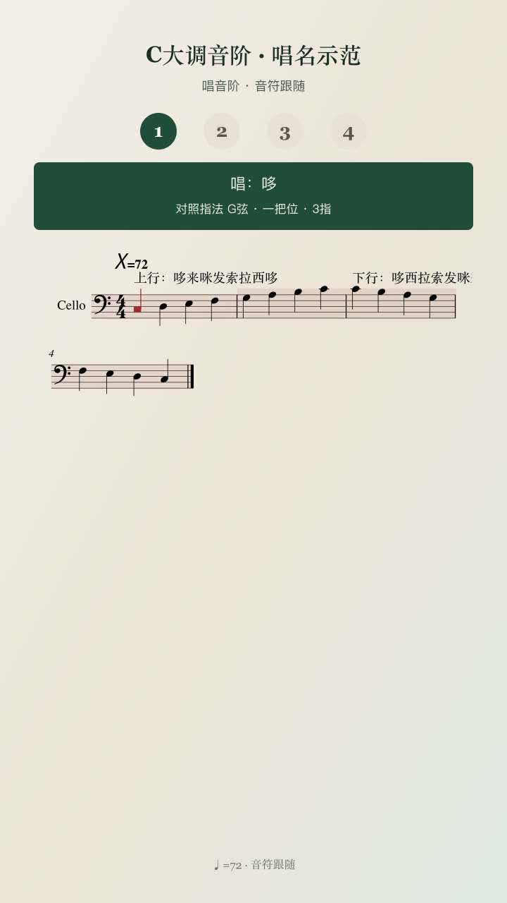
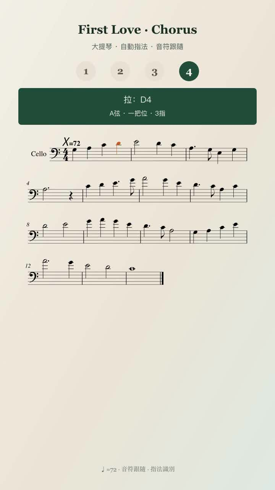
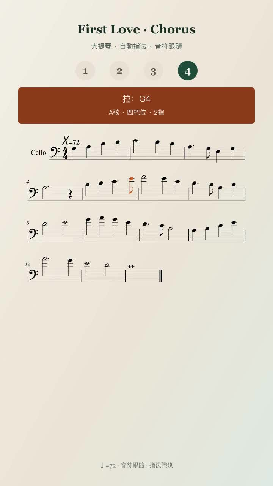
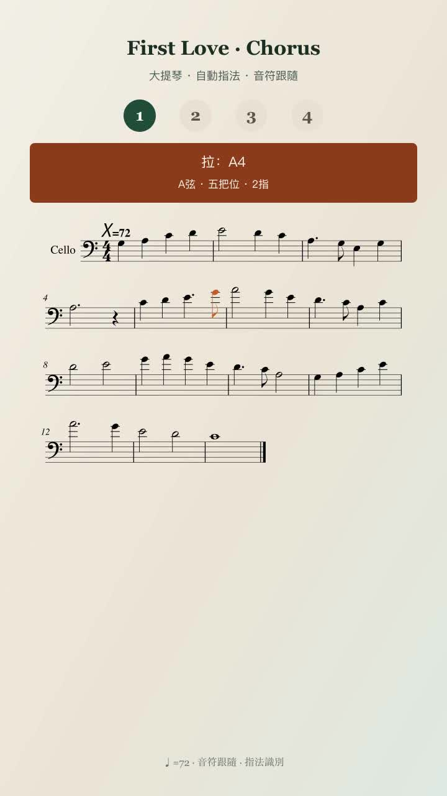
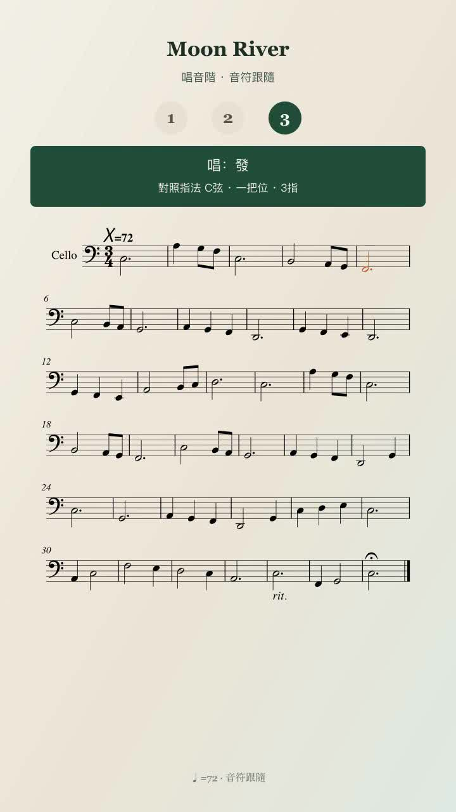

琴谱成片配色预览
竖屏跟谱帧 · 青／洋红赛博色系
谱纸底 #ffffff
一把位青 #2a6b72
中把青蓝 #3d6f8c
高把洋红 #a03d5c
跟谱高亮 #c23d6e
小节底 10%

跟谱高亮 #c23d6e + 小节 10% 洋红底

一把位 · 复古青条 #2a6b72

四把位 · 复古洋红 #a03d5c（高把档）

五把位 · 复古洋红 #a03d5c

唱音阶轨 · 白谱纸 + 洋红跟谱